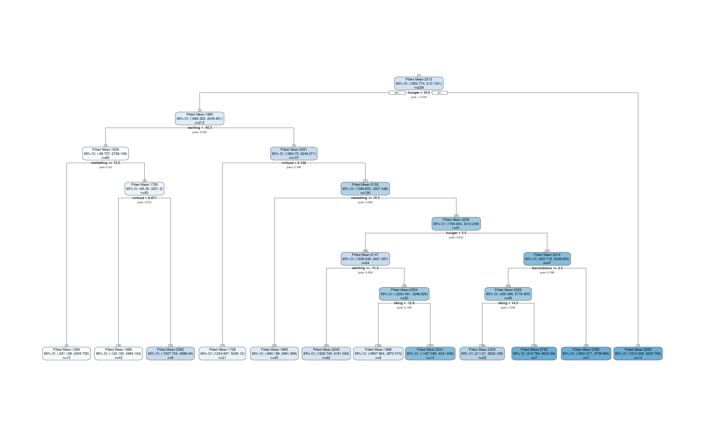

Suppose that we use a CART regression tree (Breiman et al. 1984), fit using the rpart package (Therneau and Atkinson 2019), to identify subgroups of patients in the Box Lunch Study (BLS) who share similar values of the response variable and are also described by common covariate values. The BLS dataset was originally provided in the visTree package (Venkatasubramaniam and Wolfson (2018)) and is described in detail in Venkatasubramaniam et al. (2017). The response variable is the number of calories consumed in 24 hours and the covariates include measures of eating habits and attitudes towards food. One possible CART tree fit to this dataset is shown below.
library(rpart)
library(rpart.plot)
data(blsdata, package="treevalues")
bls.tree <-rpart(kcal24h0~hunger+disinhibition+resteating+rrvfood+liking+wanting, model = TRUE, data = blsdata, cp=0.02)
rpart.plot(bls.tree, extra=1, nn=TRUE)
Suppose that we want to know whether the first split in the tree is statistically significant. In other words, we want to know if the average number of calories consumed by individuals with hunger < 11 is truly different than the average number of calories consumed by individuals with hunger >= 11. Because we used our data to select these two subgroups, we cannot naively “double dip” in the same data to test for a difference in means between the two subgroups. The package treevalues provides a way to test for this difference in means without double-dipping in the data. The package implements the selective inference framework described in Neufeld, Gao, and Witten (2021); for more details, see the preprint.
Apart from providing p-values for the difference in means across binary splits, the framework in treevalues also provides confidence intervals for the mean response within a given region. For more details on how to use the package to conduct inference, see the tutorial.
Make sure that devtools is installed by running install.packages("devtools"), then type
devtools::install_github("anna-neufeld/treevalues")
library(treevalues)
treeval.plot(bls.tree)